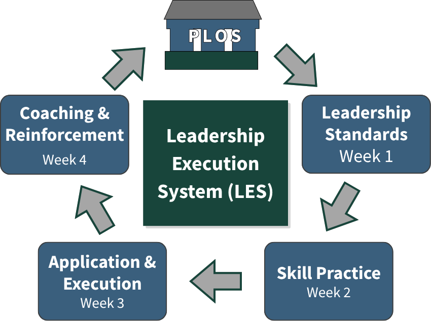

LES
The How.
Turning leadership expectations into consistent daily behavior across the site.
Most organizations define what good leadership looks like.
Very few have a system to ensure it actually happens.
Training introduces expectations. Awareness fades. Leaders return to old habits. The same problems return.
The gap is not knowledge. It is execution.
LES is the execution rhythm that turns leadership expectations into daily operational behavior.
Not a training program. Not a workshop series. An operating rhythm — built around the same discipline manufacturing organizations apply to every other critical process on the floor.
Each month, one PLOS leadership area moves through Leadership Standards, Skill Practice, Application & Execution, and Coaching & Reinforcement — across the full leadership system simultaneously.
The cycle repeats consistently across all nine modules. That repetition is what creates lasting behavior change.

The Four-Week Monthly Cycle
Leadership Standards
Supervisors, managers, support function managers, and plant leadership learn the same leadership expectations together. Short video content, a knowledge check, and a facilitated group discussion establish a common standard and shared language across all levels simultaneously.
Everyone starts from the same standard.
Skill Practice
Leaders practice the behaviors through realistic, role-specific scenarios built around actual manufacturing situations — with real pressure, real tradeoffs, and real decisions.
Situations that feel like the floor, because they are built from the floor.
Application & Execution
Each leader defines one specific, observable development action tied to their daily work — a concrete behavior they will practice in real situations during the coming weeks.
The bridge between knowing and doing.
Coaching & Reinforcement
Managers observe execution, coach directly, and reinforce what is working. Peer discussion groups share what happened in real situations. Plant leadership aligns on consistency across the site.
The cycle closes. The next one begins.
Leadership behaviors only become operational standards when they are repeatedly practiced, reinforced, and coached across the site over time. That is what LES creates — every month, across every module, for the full implementation period.
Why Repetition Matters
The four-week cycle repeats nine times — once for each PLOS module. Each repetition builds on the last.
Leadership behaviors that start as concepts in Week 1 become practiced skills in Week 2, development actions in Week 3, and reinforced standards in Week 4. By the time the full implementation is complete those behaviors are not a program. They are how leadership operates on this site.
That is the difference between a training initiative and an execution system.
For HR and Organizational Development Leaders
LES is grounded in established learning and development principles — structured learning, spaced repetition, skill practice, real-world application, and reinforcement. These are the conditions consistently shown to produce sustained behavior change at scale.
What makes LES different from most structured development models is that these principles are embedded into a fixed operational rhythm rather than delivered as a standalone program. Development happens as part of how the site operates every month — not as an initiative competing with operational priorities.
This gives HR a clear, defensible framework for implementation — and gives the organization a development model that plant leadership can own and sustain long after implementation is complete.
LES Without PLOS Has No Standard to Execute.
Without PLOS, LES has no defined standard to reinforce. Without LES, PLOS never leaves the page.
Together they create something neither can create alone — consistent leadership behavior, sustained over time, across the full site.
Ready to See How This Works in Your Operation?
The first conversation is a straightforward discussion about where your operation is and whether a leadership system makes sense.